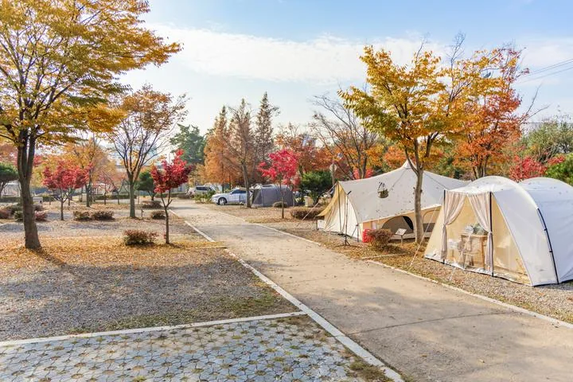
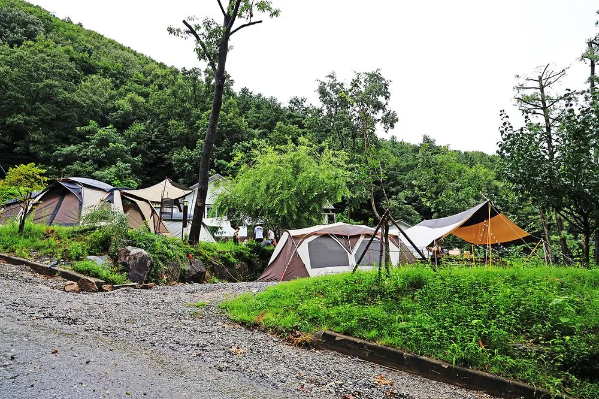
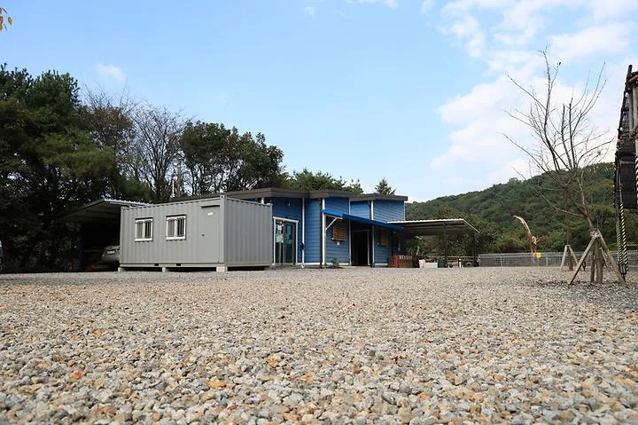
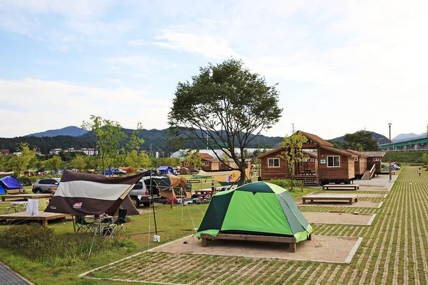
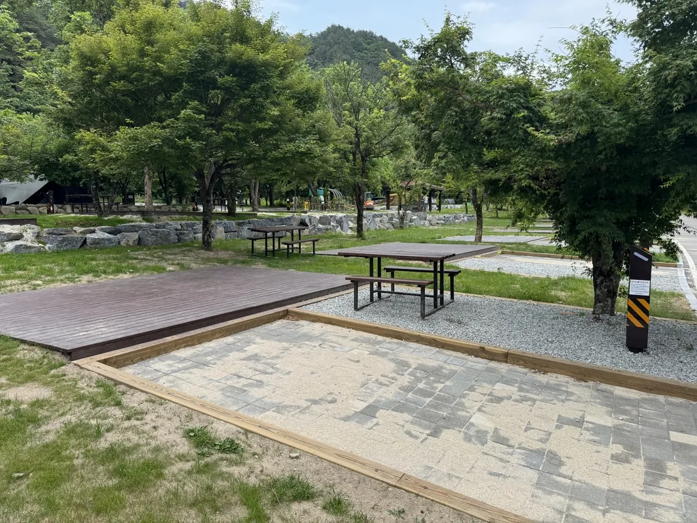
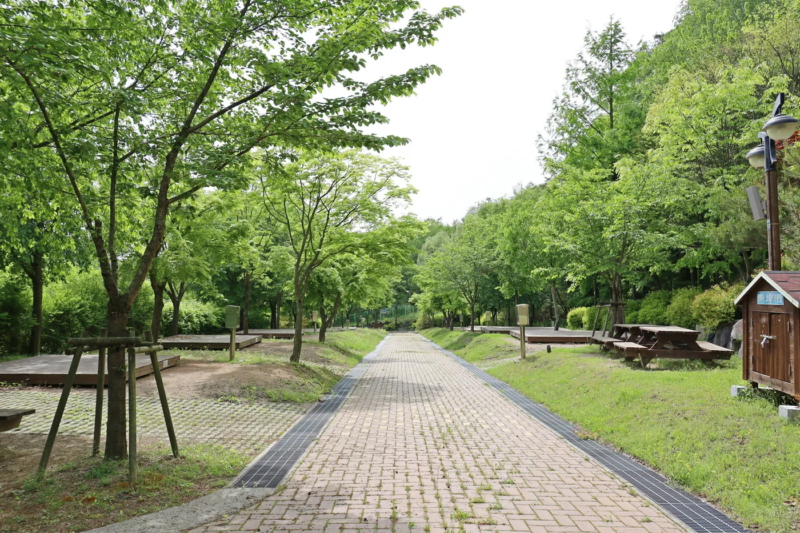

첫 차박은 싱글벙글, 가족형은 자라섬, 호수뷰는 캠핑808, 3시간 이상 목적지형은 태백산 소도가 가장 이해하기 쉽습니다.
동탄호수공원 출발 · 2026년 8월 최신 확인
동탄에서 떠나는
실패 확률 낮은
차박지 9곳
무료 노지보다 합법적으로 예약 가능한 캠핑장을 우선했습니다. 1시간권·2시간권·3시간 이상을 나누고, 실제 주소·사진·차박 허용 범위·예약 링크까지 한 번에 확인할 수 있습니다.
주행시간은 동탄호수공원 주차타워 출발·비혼잡 예상입니다. 금·토·연휴에는 30~90분 이상 늘 수 있으므로 카드의 “실시간 길찾기”로 최종 확인하세요.
9곳실제 주소·사진·예약 링크
8곳차박 명시 또는 지정 사이트
3구간1시간권 · 2시간권 · 3시간+
“차박” 문구 → 사이트 번호 → 화로·반려동물 규정을 확인하면 대부분의 실패를 피할 수 있습니다.
HOW TO READ
차박지는 “캠핑장 이름”보다
허용 범위를 먼저 봐야 합니다
자동차야영장은 보통 차량 옆에 텐트를 설치할 수 있다는 뜻입니다. 일반 승용차 안에서 자는 차박까지 자동으로 허용되는 것은 아니므로, 보고서는 명시·지정·전화 확인을 구분했습니다.
이 보고서의 선별 원칙
공식 예약 가능한 등록 캠핑장을 우선하고, 주소·운영 현황·차박 문구·사이트 번호를 교차 확인했습니다. 확인되지 않은 무료 주차장·저수지 노지는 추천 목록에서 제외했습니다.
가장 예약하기 쉬움
예약 페이지 또는 시설 안내에 “차박”이 직접 표시됩니다. 그래도 차량 크기와 도킹텐트 조건은 확인합니다.
사이트 번호가 핵심
같은 캠핑장 안에서도 차박 가능 구역이 제한됩니다. 카드에 표시된 번호·구역을 그대로 고릅니다.
오토캠핑 ≠ 승용차 숙박
캠핑카·트레일러는 허용되지만 승용차 내 숙박이 명확하지 않습니다. 결제 전에 관리실 확인이 필요합니다.
QUICK COMPARISON
9곳을 같은 기준으로 보면
어디를 예약할지 빨리 결정할 수 있습니다
시간은 비혼잡 예상 범위입니다. 모바일에서는 표를 좌우로 스크롤할 수 있고, 장소명을 누르면 상세 카드로 이동합니다.
| 구간 | 장소 | 예상시간 | 차박 허용 | 실제 주소 | 추천 대상 |
|---|---|---|---|---|---|
| 1시간권 | 화성시 향남 오토캠핑장 | 35–60분 | ☎ 승용차 숙박 전화 확인 | 경기도 화성시 향남읍 도이2길 113-36 | 아이 동반 · 첫 캠핑 · 짧은 이동 |
| 1시간권 | 용인 싱글벙글캠핑장 | 40–65분 | ✓ 예약 화면에 차박 명시 | 경기도 용인시 처인구 이동읍 상덕로 95-62 | 초보 · 조용한 숲 · 반려견 동반 |
| 1시간권 | 용인 자연숲 캠핑장 | 55–80분 | △ 지정 사이트만 차박 | 경기도 용인시 처인구 원삼면 원양로591번길 93-34 | 아이 동반 · 숲/계곡 분위기 · 사이트 선택에 익숙한 이용자 |
| 2시간권 | 안성 별숲 캠핑장 | 70–100분 | ✓ 예약 카드에 차박 O | 경기도 안성시 죽산면 곰내미길 11 | 커플 · 조용한 숙박 · 평탄한 파쇄석 선호 |
| 2시간권 | 가평 자라섬 캠핑장 | 95–130분 | ✓ 예약 화면에 차박 명시 | 경기도 가평군 가평읍 자라섬로 60 | 가족 · 초보 · 자전거/산책 · 공공시설 선호 |
| 2시간권 | 충주 캠핑808 | 110–150분 | △ E10·아이존16 제외 차박 | 충청북도 충주시 동량면 미라실로 689-1 | 호수뷰 · 사진/휴식 · 장비가 갖춰진 차박러 |
| 3시간 이상 | 태백산 소도 야영장 | 3–3.8시간 | ✓ 전 영지 도킹차박 | 강원특별자치도 태백시 천제단길 181 | 별보기 · 여름 피서 · 국립공원 · 장거리 목적지형 |
| 3시간 이상 | 오대산 소금강산 야영장 | 3.2–4.2시간 | △ A·C 영지만 도킹차박 | 강원특별자치도 강릉시 연곡면 소금강길 449 | 계곡 · 숲 · 여름 · 탐방과 차박 결합 |
| 3시간 이상 | 팔공산 도학 야영장 | 3.5–4.5시간 | ✓ 전 영지 도킹차박 | 대구광역시 동구 팔공산로237길 47 | 팔공산 탐방 · 대구 여행 연계 · 2박 원정 |
시간 표기의 의미: “1시간권”과 “2시간권”은 실시간 교통이 아닌 여행 계획용 구간입니다. 자라섬·캠핑808은 주말 정체 시 2시간을 넘길 수 있으므로 출발 전 반드시 경로를 다시 확인하세요.
WITHIN 1 HOUR
1시간권 — 첫 차박은
“가깝고 규정이 분명한 곳”이 좋습니다
퇴근 후 출발하거나 아이와 첫 숙박을 할 때 적합합니다. 용인 자연숲은 주말에 1시간을 넘길 수 있지만 사이트 지정이 분명해 후보로 유지했습니다.
우선순위
초보: 싱글벙글 → 아이: 자연숲 → 공공/가성비: 향남
초보: 싱글벙글 → 아이: 자연숲 → 공공/가성비: 향남

🚗 약 35–60분☎ 승용차 숙박 전화 확인
1시간권 · 동탄호수공원 출발
화성시 향남 오토캠핑장
가장 가까운 공공형 · 아이 놀이터와 큰 사이트
실제 주소경기도 화성시 향남읍 도이2길 113-36
차박 조건☎ 승용차 숙박 전화 확인
공식 안내는 텐트·소형 캠핑카·트레일러 허용 범위는 구체적이지만, 일반 승용차 안에서의 숙박은 명시하지 않습니다. 예약 전 “일반 차량 차박” 가능 여부를 전화로 확인하세요.
요금화성시민 평일 1만원 / 관외 평일 2.5–3만원 / 주말 3–4만원 + 전기 3천원
시설샤워장·화장실·개수대·놀이터·트램폴린·전기 600W
추천 대상아이 동반 · 첫 캠핑 · 짧은 이동반려동물 불가
추천 이유
- 동탄에서 가장 부담이 작은 이동거리
- A형 8.5×10m, B형 12×12m로 여유
- 화성시민 예약·요금 우대
예약 전 확인
- 공식 주소 113-36과 고캠핑 113-26 표기가 달라 장소명 검색 권장
- 텐트 개별 지참, 밤 22시 이후 입차 금지
🚗 약 40–65분✓ 예약 화면에 차박 명시
1시간권 · 동탄호수공원 출발
용인 싱글벙글캠핑장
초보 차박 1순위 · 예약 화면에 차박이 명시된 숲 캠핑장
실제 주소경기도 용인시 처인구 이동읍 상덕로 95-62
차박 조건✓ 예약 화면에 차박 명시
땡큐캠핑 예약 화면의 시설 유형에 “차박”이 명시됩니다. 차량 크기와 도킹텐트 사용 여부는 예약할 사이트 상세 조건을 다시 확인하세요.
요금예약일·사이트별 변동 — 실시간 예약창 확인
시설샤워장·화장실·개수대·매점·전기·트레일러/카라반 입장
추천 대상초보 · 조용한 숲 · 반려견 동반반려동물 동반 가능(현장 조건 확인)
추천 이유
- “차박” 표기가 분명해 예약 실수 가능성이 낮음
- 동탄과 가까우면서 숲 분위기
- 매점과 기본 편의시설이 있어 첫 방문에 편함
예약 전 확인
- 야간 사진처럼 숲이 어두울 수 있어 랜턴 필수
- 사이트별 차량 진입 동선·크기를 예약 전에 확인

🚗 약 55–80분△ 지정 사이트만 차박
1시간권 · 동탄호수공원 출발
용인 자연숲 캠핑장
아이와 숲속 차박 · 단, 지정 사이트 번호를 골라야 함
실제 주소경기도 용인시 처인구 원삼면 원양로591번길 93-34
차박 조건△ 지정 사이트만 차박
캠핏 기준 A5·A6, B7·B20·B22, B24–B28 등 차박 가능 표시가 있는 사이트만 선택하세요. 같은 캠핑장 안에서도 일반 사이트는 조건이 다를 수 있습니다.
요금예약일·구역별 변동 — 캠핏 사이트 상세 확인
시설수영장·트램폴린·모래놀이터·샤워장·화장실·전기
추천 대상아이 동반 · 숲/계곡 분위기 · 사이트 선택에 익숙한 이용자예약 규정 확인
추천 이유
- 아이 놀이시설이 다양해 가족 체류에 유리
- 숲과 경사 지형으로 사이트별 분위기가 다름
- 차박 가능 사이트 번호가 공개되어 선택 가능
예약 전 확인
- 주말 동탄 출발은 1시간을 넘길 수 있음
- 반드시 예약 카드에서 “차박 가능” 문구 재확인
AROUND 2 HOURS
2시간권 — 이동보다
현지에서의 “한 가지 경험”을 고르세요
조용한 숲, 가족형 공공캠핑장, 호수뷰처럼 목적이 분명한 세 곳입니다. 금요일 저녁·토요일 오전에는 모두 예상시간을 넘길 수 있습니다.
우선순위
조용함: 별숲 → 가족: 자라섬 → 풍경: 캠핑808
조용함: 별숲 → 가족: 자라섬 → 풍경: 캠핑808

🚗 약 70–100분✓ 예약 카드에 차박 O
2시간권 · 동탄호수공원 출발
안성 별숲 캠핑장
조용한 파쇄석 차박 · “차박 O” 사이트를 골라 예약
실제 주소경기도 안성시 죽산면 곰내미길 11
차박 조건✓ 예약 카드에 차박 O
공식 예약 페이지의 오토캠핑 상품 중 “차박 O”라고 표시된 사이트를 선택해야 합니다. 캠핑장 전체를 일괄 차박 가능으로 보지 않는 것이 안전합니다.
요금예약일·사이트별 변동 — 공식 예약창 확인
시설파쇄석 사이트·사이트 옆 주차·화장실·샤워장·개수대
추천 대상커플 · 조용한 숙박 · 평탄한 파쇄석 선호반려동물 불가
추천 이유
- 2시간권 중 이동 부담과 숲 분위기의 균형
- 차박 가능 표기가 예약 카드에 직접 노출
- 파쇄석 바닥으로 우천 후 관리가 비교적 쉬움
예약 전 확인
- 정확한 사이트 상품명에 “차박 O”가 있는지 확인
- 민간 캠핑장 요금·운영일은 수시 변동

🚗 약 95–130분✓ 예약 화면에 차박 명시
2시간권 · 동탄호수공원 출발
가평 자라섬 캠핑장
가족형 1순위 · 넓은 공공캠핑장과 자전거·산책 동선
실제 주소경기도 가평군 가평읍 자라섬로 60
차박 조건✓ 예약 화면에 차박 명시
땡큐캠핑 예약 화면에 “차박” 시설 유형이 표시됩니다. 넓은 캠핑장이라 구역·사이트 위치와 화장실까지의 거리를 함께 확인하세요.
요금사이트·시즌별 변동 — 공식 예약창 확인
시설화장실·샤워장·개수대·전기·산책/자전거 동선·넓은 잔디
추천 대상가족 · 초보 · 자전거/산책 · 공공시설 선호반려동물 출입 불가
추천 이유
- 공공 운영과 넓은 동선으로 가족 차박에 안정적
- 자라섬 산책·자전거를 함께 즐기기 좋음
- 차박 표기가 명확해 초보 예약에 유리
예약 전 확인
- 금·토 오후 서울양양고속도로 정체 시 2시간 초과 가능
- 구역이 넓어 편의시설 거리 체크 필요
🚗 약 110–150분△ E10·아이존16 제외 차박
2시간권 · 동탄호수공원 출발
충주 캠핑808
호수뷰 1순위 · 대부분 사이트 차박 가능, 두 곳은 제외
실제 주소충청북도 충주시 동량면 미라실로 689-1
차박 조건△ E10·아이존16 제외 차박
Q가이드 기준 E10과 아이존16을 제외한 사이트에서 차박이 가능합니다. 차량 크기·도킹텐트·추가 차량 규정은 예약 직전 다시 확인하세요.
요금평일 약 5.5–6.5만원 / 주말 약 6.5–7.5만원(사이트별 변동)
시설충주호 전망·전기·샤워장·화장실·개수대·매점
추천 대상호수뷰 · 사진/휴식 · 장비가 갖춰진 차박러소형견 가능(규정 확인)
추천 이유
- 모든 사이트가 호수 방향이라는 강한 목적성
- 차박 불가 사이트가 구체적으로 안내됨
- 2시간권에서 여행지 느낌이 가장 큼
예약 전 확인
- 금요일 퇴근 이후·토요일 오전은 2시간을 넘길 가능성 큼
- 호수 바람과 일교차 대비 필요
3 HOURS OR MORE
3시간 이상 — 1박보다
2박 원정으로 잡아야 만족도가 높습니다
세 곳 모두 국립공원 공식 야영장입니다. 여기서 “차박”은 도킹텐트를 차량에 연결하는 방식을 뜻하며, 장작·난로·반려동물 제한이 민간 캠핑장보다 엄격합니다.
우선순위
여름/별: 소도 → 계곡: 소금강산 → 대구 연계: 도학
여름/별: 소도 → 계곡: 소금강산 → 대구 연계: 도학
🚗 약 180–230분✓ 전 영지 도킹차박
3시간 이상 · 동탄호수공원 출발
태백산 소도 야영장
장거리 1순위 · 전 영지 도킹차박, 고원 숲과 별밤
실제 주소강원특별자치도 태백시 천제단길 181
차박 조건✓ 전 영지 도킹차박
국립공원 이용정책상 소도 전 영지가 차박 가능입니다. 다만 국립공원의 “차박”은 도킹텐트를 차량에 연결하는 형태를 뜻합니다.
요금자동차영지 주중 2만원 / 주말·성수기 3만원
시설전기·코인샤워·화장실·개수대·태백산 탐방
추천 대상별보기 · 여름 피서 · 국립공원 · 장거리 목적지형국립공원 야영장 반려동물 불가
추천 이유
- 3시간을 달릴 이유가 분명한 고원형 목적지
- 전 영지 차박 가능이라 사이트 선택이 단순
- 국립공원 가격과 시설 기준이 명확
예약 전 확인
- 장작 사용 불가, 계절별 숯불 제한 확인
- 고지대 기온·강풍·우천 대비 필수

🚗 약 190–250분△ A·C 영지만 도킹차박
3시간 이상 · 동탄호수공원 출발
오대산 소금강산 야영장
계곡·숲 목적지형 · A·C 영지만 도킹차박 가능
실제 주소강원특별자치도 강릉시 연곡면 소금강길 449
차박 조건△ A·C 영지만 도킹차박
국립공원 이용정책상 A·C 영지에서만 차박이 가능하고 B 영지는 불가합니다. 예약 화면에서 영지 구역을 반드시 확인하세요.
요금A영지 주중 2만원/주말 3만원 · C영지 주중 3만원/주말 3.5만원
시설전기·코인샤워·화장실·개수대·소금강 계곡/탐방로
추천 대상계곡 · 숲 · 여름 · 탐방과 차박 결합국립공원 야영장 반려동물 불가
추천 이유
- 도착 후 계곡과 숲이 주는 여행 만족도가 큼
- A·C 구역에 차박 가능 범위가 명시
- 강릉·오대산 일정과 묶기 좋음
예약 전 확인
- B영지는 차박 불가
- 장작·난로 등 국립공원 제한과 산불조심기간 확인

🚗 약 210–270분✓ 전 영지 도킹차박
3시간 이상 · 동탄호수공원 출발
팔공산 도학 야영장
대구·팔공산 원정형 · 전 영지 도킹차박, 무료 샤워
실제 주소대구광역시 동구 팔공산로237길 47
차박 조건✓ 전 영지 도킹차박
국립공원 이용정책상 도학 전 영지가 차박 가능이며, 도킹텐트 형태를 의미합니다. 총 29개 자동차영지로 규모가 작아 예약 경쟁을 예상하세요.
요금자동차영지 주중 2만원 / 주말·성수기 3만원
시설무료 샤워·전기 600W·Wi‑Fi·전자레인지·화장실·개수대
추천 대상팔공산 탐방 · 대구 여행 연계 · 2박 원정국립공원 야영장 반려동물 불가
추천 이유
- 3시간 이상 장거리 중 편의시설 대비 가격이 좋음
- 전 영지 차박 가능이라 예약 판단이 단순
- 팔공산·동화사·대구 일정과 결합 가능
예약 전 확인
- 총 29면으로 주말 경쟁이 큼
- 산불조심기간 숯불 금지, 장작·등유·알코올 난로 금지
WHO SHOULD GO WHERE
상황별로 고르면
추천 순서가 달라집니다
거리만 보지 말고 “누구와 가는지, 무엇을 하고 싶은지”를 먼저 정하면 예약 실패가 줄어듭니다.
차박이 처음
차박 표기가 명확하고 매점·기본시설이 있는 곳부터 시작합니다.
싱글벙글 → 자라섬아이와 함께
놀이터·수영장·넓은 산책 동선이 이동거리보다 중요합니다.
자연숲 → 향남 → 자라섬풍경이 최우선
호수·고원·계곡처럼 한 가지 장면이 강한 목적지형을 고릅니다.
캠핑808 → 소도 → 소금강산반려견 동반
국립공원과 공공 캠핑장은 대부분 불가입니다. 민간 규정을 우선 확인합니다.
싱글벙글 · 캠핑808 우선 확인BOOKING & SAFETY FLOW
예약 버튼을 누르기 전
6단계만 확인하세요
차박 사고와 예약 실수는 대부분 “사이트 규정”과 “환기”에서 생깁니다. 아래 순서대로 확인하면 첫 방문의 불확실성을 크게 줄일 수 있습니다.
1
실시간 경로
금·토·연휴 교통을 확인하고 예상보다 30분 이상 여유를 둡니다.
2
차박 문구
예약 상품에 “차박”, “도킹차박”, “캠핑카” 중 무엇이 적혔는지 봅니다.
3
사이트 번호
자연숲·캠핑808·소금강산처럼 일부 사이트만 가능한지 확인합니다.
4
전화 확인
승용차 숙박·도킹텐트·추가 차량이 애매하면 결제 전에 관리실에 묻습니다.
5
환기·CO
차량·텐트 안에서 숯, 화로, 가스난로를 쓰지 말고 환기구와 CO 경보기를 준비합니다.
6
날씨·화기
산불조심기간, 강풍·호우, 전기 허용량과 장작 금지 규정을 출발 당일 재확인합니다.
EXCLUDED & WATCHLIST
유명하더라도 현재 규정이 불명확하면
추천에서 뺐습니다
검색 결과에 오래된 후기만 남아 있는 곳은 실제 운영 여부가 달라질 수 있습니다. 아래는 이번 선별 과정에서 제외하거나 보류한 대표 사례입니다.
매송 오토캠핑장·송지호
매송은 2026년 6월 1일부터 운영 중단 안내가 확인됐고, 송지호는 2026년 7월 공지에서 차박·루프탑 금지를 안내했습니다.
- 과거 블로그의 “차박 가능” 후기만 보고 출발하지 않기
- 운영 공지와 예약 가능 여부를 출발일 기준으로 확인
무료 노지·주차장·고사포1
저수지·항구 주차장은 야간 주차와 취사 규정이 수시로 바뀝니다. 고사포1은 공식 정책상 차박 가능 영지가 가-무·나-무 2곳뿐이라 핵심 9곳에서 제외했습니다.
- “화장실이 있다”와 “숙박·취사가 허용된다”는 다른 문제
- 무료 노지는 현장 표지판·지자체 공지를 최우선
최종 확인 원칙: 캠핑장 운영·요금·반려동물·화기 규정은 기상과 계절에 따라 바뀔 수 있습니다. 이 보고서의 기준일은 2026년 8월 8일이며, 예약 결제 화면과 당일 공지가 최종 기준입니다.